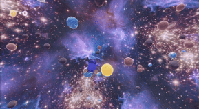
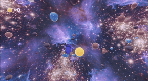

CS student passionate about AI, Data Science, Game Dev & High Performance Backends
Select projects showcasing my skills and interests. Click any project to learn more!


Stochastic Markov-based SIRD pandemic simulator with Godot frontend showing live infection spread across 3D globe.

Built a scalable, concurrent Go crawler using SQLite Utlizing chunking. Easily run thousands of go routines to processes any number of documents per page.
 

3D Godot game simulating galaxy formations with Perlin noise and vector field enemies.

Flask-React Powered website returns a list of food items and nutritional info from restaurants that fits your dietary needs.
Mini Game submission for GDC game jam at UC Merced featuring Godot.
Terminal based TicTacToe game featuring an unbeatable AI. Uses a graph data structure to render the mini-max algorithm.
Visualize spirals by putting the directions up, right, down, and left in a queue data structure.
Professional roles where I've applied my technical skills to solve real-world problems.
The programming languages I specialize in and why I choose them for different types of projects.

My go-to language for data engineering and AI development. Python's extensive library ecosystem (TensorFlow, PyTorch, Pandas, NumPy) makes it perfect for implementing complex machine learning models and data processing pipelines.
When it comes to backend development, I choose Go for its exceptional performance, built-in concurrency, and simplicity. Go's goroutines and channels make it ideal for building scalable, high-performance services and distributed systems.